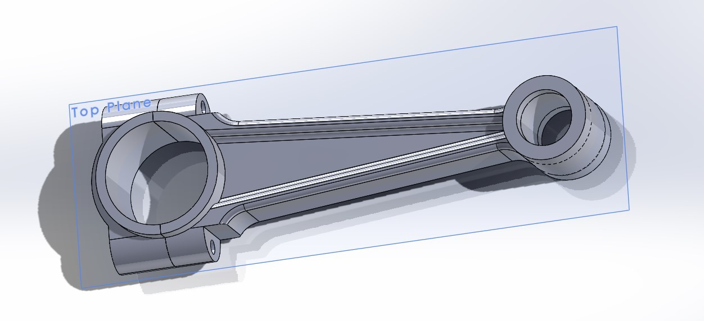
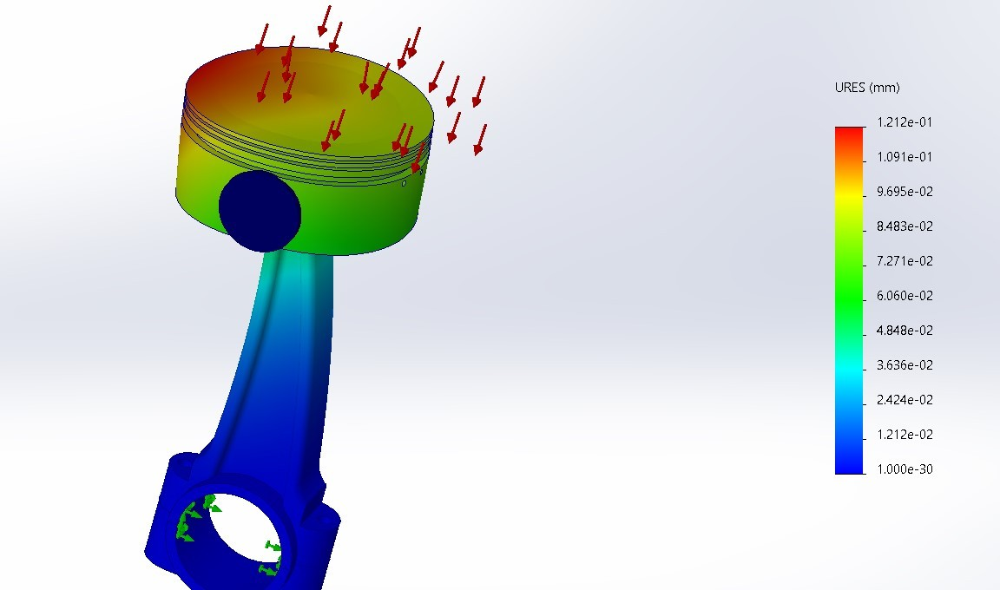
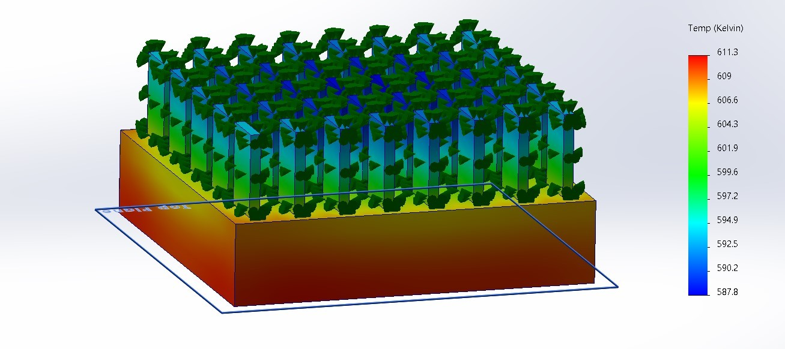
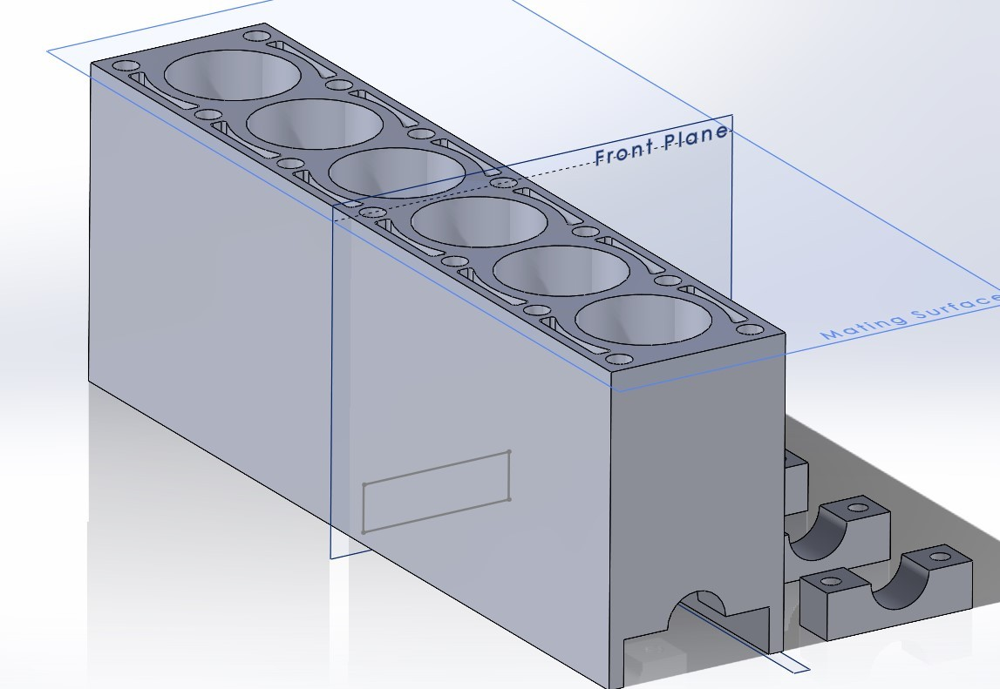

BUILDING IT
Coursework teaches the theory. These projects are where I practiced turning it into geometry, boundary conditions, and results I could interpret. Each one started with a question — how is this part shaped, where does it carry load, where does the heat go — and ended with a model that answered it.
None of these were for a class or an employer. They're the reps that built the CAD and analysis habits I now use on real hardware programs.

A full connecting rod modeled from scratch: an I-beam shank with raised flanges for bending stiffness at low weight, a split big end with bolt bosses for the rod cap, and a small end sized for the wrist pin and bushing.
The goal was to understand why rods look the way they do — material goes where the load path needs it, and fillets at the shank-to-eye transitions keep stress from concentrating at the sharpest corners.

A static study on a piston and connecting rod assembly. A pressure load on the piston crown (red arrows) stands in for combustion force, and the big-end bore is fixed (green arrows) where it would ride on the crankshaft.
The result shows how the assembly deflects: the piston crown moves the most and the motion falls off down the shank to essentially zero at the fixed big end.

A thermal model of a computer chip with a pin-fin heat sink mounted on top. Heat is generated in the chip block, conducts up into the fins, and leaves through convection on the fin surfaces (the green arrows).
The plot shows the expected gradient: the chip base runs hottest and the fin tips run coolest, with roughly a 23 K drop from base to tip. Center fins stay cooler than edge fins, which shows how evenly the sink spreads heat.

A basic inline-six block built around six cylinder bores. The deck surface carries head bolt holes between the cylinders and coolant passages that wrap around the bores to pull heat away from the cylinder walls.
Underneath, the block has main bearing saddles with separate bearing caps for the crankshaft. The deck is set up as a mating surface so a cylinder head could be assembled on top.
- Sketch-driven part design
- Reference planes and mating surfaces
- Load-path-driven geometry
- Internal passages and bores
- Multi-body parts and assemblies
- Static study setup
- Fixtures and pressure loads
- Meshing an assembly
- Reading displacement results
- Sanity-checking results against intuition
- Heat generation inputs
- Convection boundary conditions
- Conduction through assemblies
- Temperature gradient interpretation
- Heat sink effectiveness